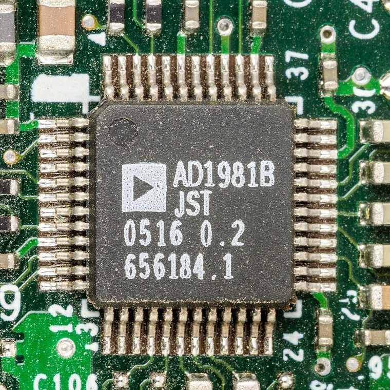
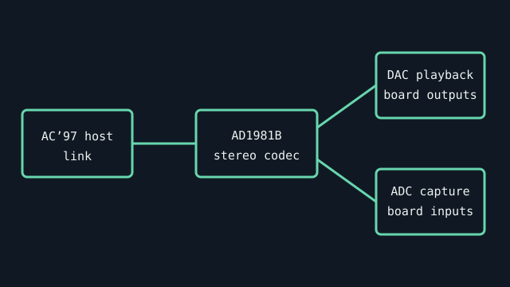

[ SEMICONDUCTOR // AUDIO CODEC ]
Analog Devices AD1981B
AC’97 stereo codec used on PC motherboards and embedded host boards. The IC implements codec conversion; the motherboard determines the connectors and remaining analog path.


Specifications
| Product ID | Analog Devices AD1981B audio codec; confirm package marking and board revision. |
|---|---|
| Host interface | AC’97 2.3 codec link; requires a compatible AC’97 host controller and board clock/reset implementation. |
| Conversion | Stereo DAC playback and stereo ADC capture; 18-bit conversion resolution is specified by the manufacturer. This is not a multichannel HD Audio codec. |
| Connectors / I/O | Codec analog pins connect to board-specific line/headphone output, line input, microphone input, and optional modem/aux paths; connectors are not part of the IC. |
| Drivers / OS | Drivers are distributed with the PC/motherboard package; the IC datasheet does not establish an operating-system driver. Record the actual host chipset and board driver. |
| Variant compatibility | AD1981A/AD1981B and later AD198x parts have related but non-identical features and pin/driver assumptions. Match the complete part marking and datasheet revision. |
Service & preservation
Record the package suffix, board name, and host AC’97 controller before replacing drivers or codec ICs. Consult both motherboard schematic and codec datasheet; do not assume a footprint-compatible device is a firmware/driver-compatible substitution.
Primary sources
- Analog Devices — AD1981B datasheetManufacturer source for AC’97 interface, conversion, pin functions, and electrical limits.